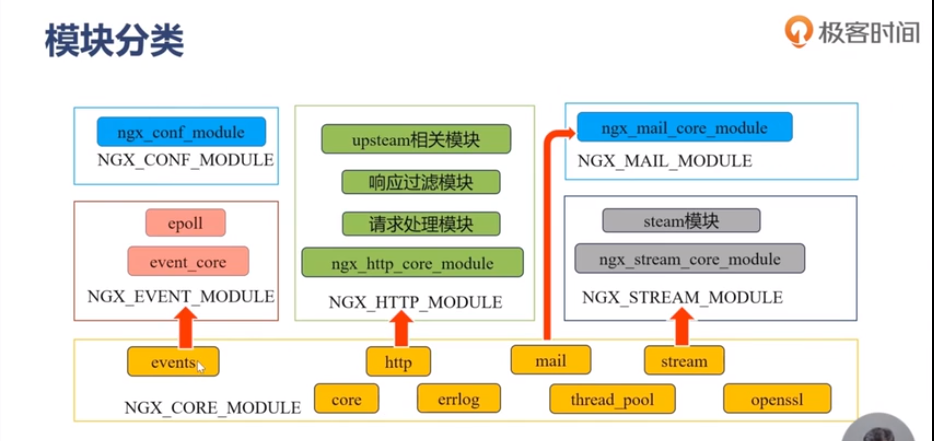

nginx模块划分
架构图：

总共分为6部分：
1.event module:搭建了独立于操作系统的事件处理机制的框架，以及提供了各具体事件的处理，包括ngx_event_module、ngx_event_core_module和ngx_epoll_module等，Nginx具体使用何种事件处理模块，这依赖于具体的操作系统和编译选项。
- phase handler:此类型的模块也被直接称为handler模块，主要负责处理客户端请求并产生待响应内容，比如ngx_http_module模块，负责客户端的静态页面请求处理并将对应的磁盘文件准备为响应内容输出。
output filter:也称为filter模块，主要是负责对输出的内容进行处理，可以对输出进行修改，比如可以实现对输出的所有html页面增加预定义的footbar一类的工作，或者对输出的图片的URL进行替换之类的工作。
upstream:实现反向代理功能，将真正的请求转发到后端服务器上，并从后端服务器上读取响应，发回客户端，upstream模块是一种特殊的handler，只不过响应内容不是真正由自己产生的，而是从后端服务器上读取的。
load-balancer:负载均衡模块，实现特定的算法，在众多的后端服务器中，选择一个服务器出来作为某个请求的转发服务器。
extend module:根据特定业务需要编写的第三方模块